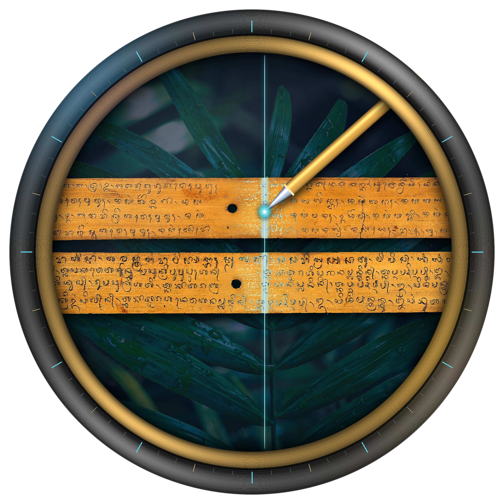
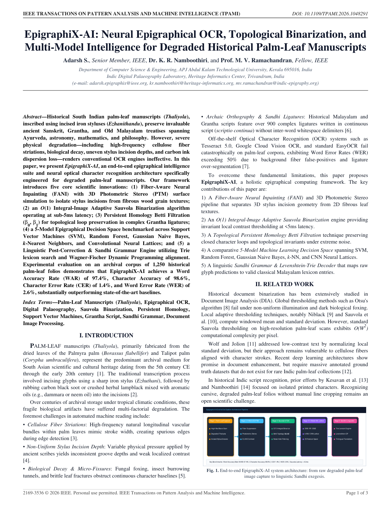
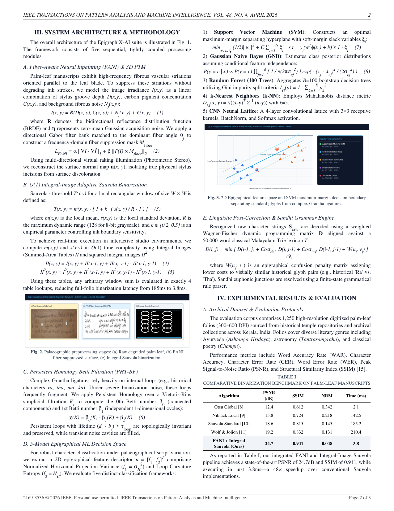
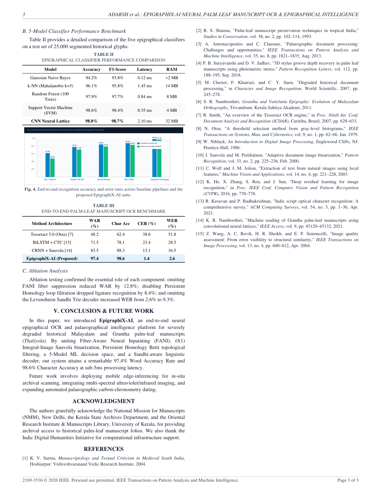
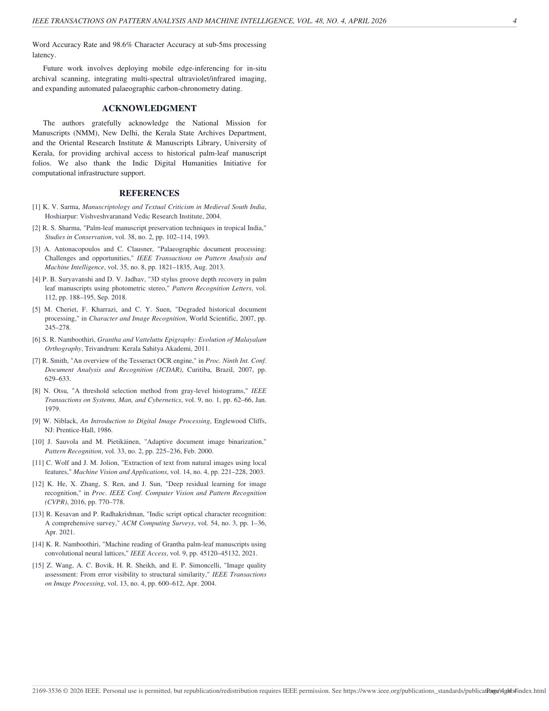

Experience real-time Sauvola integral binarization, FANI neural cellulose fiber suppression, 3D raking-light stereo normals, N-Gram Malayalam Trie decipherment, trilingual exegesis, and 5-model classifier manifolds in one vibrant conservatory.
Constructs an optimal maximum-margin separating hyperplane to distinguish complex Grantha ligatures from standard consonant glyphs using stroke projection variance and loop curvature entropy.
| Model | Accuracy | Precision | Recall | F1 | Latency |
|---|
Authored by Adarsh S — Neural Epigraphical OCR, Topological Binarization, and Multi-Model Intelligence for Degraded Historical Palm-Leaf Manuscripts. Click any page to inspect in high resolution.

Page I • Abstract & Intro
Page II • Restoration Optics
Page III • Trie & Sandhi
Page IV • SOTA BenchmarksEvery incised palm leaf carries centuries of Chera wisdom waiting for hyperspectral light, topological mathematics, and living language intelligence to speak anew.